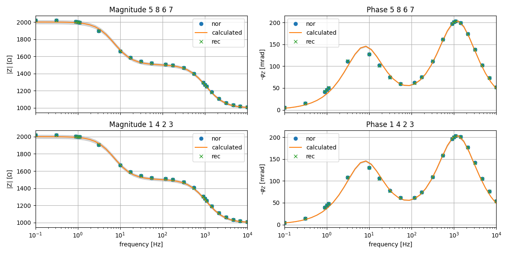

Note
Click here to download the full example code
EIT40 Testboard V2¶
This example shows how to execute the helper function “testboard_evaluation” from the eit_fzj_utils. It is used to plot the results of measurements conducted on the testboard that was built to check the functionality of the eit systems. A theoretical calculated response that is based on the built-in resistors and capicitors is plotted together with the measurement results.
Out:
Constructing four-point measurements
Adding column Zg from MD
Adding column Iab from MD
Adding column Ileakage from MD
Summary:
a b m ... r frequency rpha
count 92.000000 92.000000 92.000000 ... 92.000000 92.000000 92.000000
mean 3.500000 5.500000 3.500000 ... 1495.079488 1411.945427 -103.775425
std 2.072849 2.072849 2.072849 ... 349.615040 2499.461903 60.876602
min 1.000000 3.000000 1.000000 ... 1009.722262 0.100000 -203.176382
25% 1.750000 3.750000 1.750000 ... 1191.964147 3.125000 -158.334102
50% 3.500000 5.500000 3.500000 ... 1499.604785 175.000000 -101.997050
75% 5.250000 7.250000 5.250000 ... 1894.325500 1450.000000 -53.526973
max 6.000000 8.000000 6.000000 ... 2021.093567 10000.000000 -4.632527
[8 rows x 7 columns]
import reda
import numpy as np
# A config with the used channels/configurations has to be put in. This can be
# a numpy array or a config.dat-file. It is important that normal and
# reciprocal measurements are taken for the check.
configs = np.array([
[1, 4, 2, 3],
[2, 3, 1, 4],
[5, 8, 6, 7],
[6, 7, 5, 8]
])
# The function can be executed with the following command. The first parameter
# has to lead to the datapath of the measurement, the second to the config.dat
# or config array and the third one denotes the output name. Optional
# parameters are the frequency range to compare the measurements to
# (input has to be in log10-space) and the error-percentage of the
# measurements.
reda.utils.eit_fzj_utils.testboard_evaluation(
"data_eit_fzj_testboard/eit_data_mnu0.mat",
configs,
'data_eit_fzj_testboard/testboard'
)